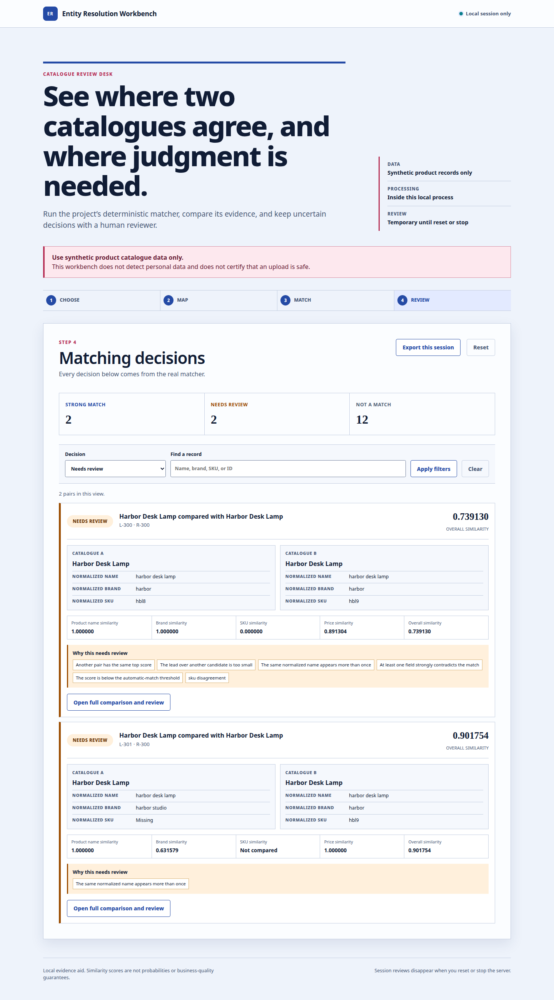

Catalogue A
Harbor Desk Lamp
normalized name: harbor desk lamp
normalized brand: harbor
normalized SKU: hbl8
Entity Resolution · Data quality
Prepared browser comparison · Fictional data · Public local matcher
Compare names and attributes, inspect the differences and understand why a pair needs review. Similarity scores explain the comparison; they are not probabilities.
Interactive prepared comparison
These are fictional catalogues. Selecting a pair renders prepared data in the browser; it does not call the local matcher. The number field changes only the threshold explanation shown below, before any engine input is made.
The similarity is an explanatory score, not a probability. The local engine decides MATCH, REVIEW or NO_MATCH using more than one score: contradiction, evidence and competing candidates also matter. A reviewer's session-only annotation can follow REVIEW, but it does not change the engine decision. This browser threshold cannot rerun either step.
Inspect the public decision code, focused tests and fictional catalogues. In that repository, run uv sync --frozen, then .venv/bin/python scripts/workbench_control.py start --port 8765; stop with the same command and stop.
The public repository is a source snapshot with selected runtime tests, not its full private Git history.
Harbor Desk Lamp
normalized name: harbor desk lamp
normalized brand: harbor
normalized SKU: hbl8
Harbor Desk Lamp
normalized name: harbor desk lamp
normalized brand: harbor
normalized SKU: hbl9
These shown records are a review case, not an asserted match. The same normalized name appears more than once, another candidate shares the top score, the SKU contradicts, and the score is below the automatic-match threshold.

A manual annotation is session-local and applies only to an engine REVIEW. It never changes the engine decision. The page shows raw and normalized values, comparison reasons, and all three decision types together.
uv sync --frozen
.venv/bin/python scripts/workbench_control.py start --port 8765
.venv/bin/python scripts/workbench_control.py stop
Open http://127.0.0.1:8765/. Use only the versioned synthetic sample or small CSV inputs explicitly acknowledged as synthetic. The engine is not a hosted service.